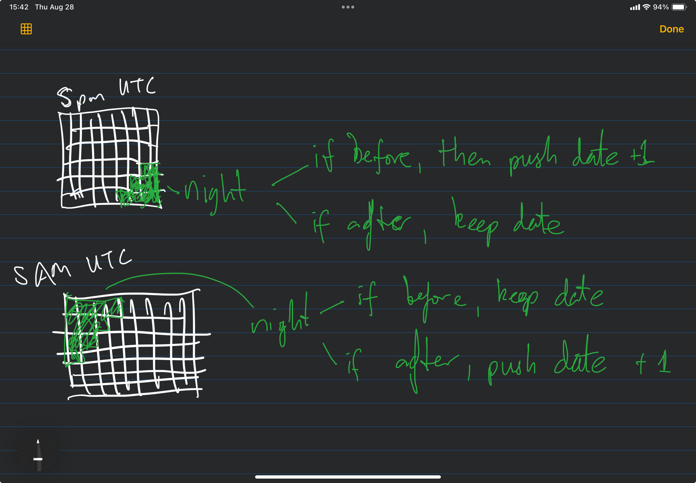

eg_file = data_catalog['download']['outputs']['2009_01_nepal'].load()
with ClimateDataFileHandler(eg_file) as handler:
ds = xr.open_dataset(handler.get_dataset("instant"))
#ds = xr.open_dataset(handler.get_dataset("accum"))
dsAggregation: The aggregation Module as a pytask Task
task_aggregate
This task aggregates the downloaded data into spatial and temporal averages. It uses xarray to compute summary statistics over the specified time period and spatial region. The aggregation is done diurnally, so we will fetch the sundown and sunrise times for the region and use them to compute the diurnal averages.
Diurnal Classification Based on Sun Position
To do diurnal classificaiton, we will need to fetch the sundown and sunrise times for the region and use them to compute the diurnal averages. We will use the astral library to get the sunrise and sunset times for the specified latitude and longitude. The aggregation will be done using xarray, which allows us to compute the mean over the specified time period and spatial region.
Here’s our example file:
We can see the astral library in action below:
Exported source
from astral import Observer, sun
import pandas as pd
import numpy as np
from tqdm import tqdm
import random
import datetime
from pytz import UTC# get the location of a datapoint in the dataset
lat, long = ds.coords["latitude"].values[0], ds.coords["longitude"].values[0]
time = ds['valid_time'].values[0]
dt = pd.to_datetime(time, utc=True)dtobserver = Observer(latitude=lat, longitude=long, elevation=0)
sun_info = sun.sun(observer, date=dt)
sun_infoAstral is very fast:
#fetch a random time from valid_time
options = ds['valid_time'].values
random_time = random.choice(options)
dt = pd.to_datetime(random_time, utc=True)
sun_info = sun.sun(observer, date=dt)
if dt < sun_info['sunrise']:
print(f"Randomly selected time: {dt} is pre_dawn")
elif dt >= sun_info['sunrise'] and dt < sun_info['sunset']:
print(f"Randomly selected time: {dt} is day")
else:
print(f"Randomly selected time: {dt} is post_dusk")This tells us that we can use the valid time for the specific location of each data point in the query and know based on the sun whether it was daytime or nighttime. The runtime will be limited only by the looping. Let’s put this in a function so that we can use the resampling in xarray.
The resampling approach will be a single function that can resample in three ways:
- By calendar date, default (1 value per calendar date)
- By diurnal class by calendar date (3 values, pre-dawn, day, post-dusk)
- By solar date (2 values per calendar date, with night classified as “before” or “after”)
Therefore, we’ll need 2 internal functions; one to do diurnal, and one to do solar date bins.
Essentially, we are going to create an array-shaped index/mask, (time, latitude, longitude). As a demonstration, this loop goes through the first 24 time points in the dataset, and calculates the sun info for each latitude and longitude, assigning the values to an array:
times = ds['valid_time'].values[:24]
lats = ds.coords['latitude'].values
lons = ds.coords['longitude'].values
result = np.full((len(times), len(lats), len(lons)), "", dtype=object)
for i, dt in enumerate(times):
for j, lat in enumerate(lats):
for k, lon in enumerate(lons):
# set the geographical position
observer = Observer(latitude=lat, longitude=lon, elevation=0)
# use the time
dt = pd.to_datetime(dt, utc=True)
# where/when is the sun at this time for this position
sun_info = sun.sun(observer, date=dt)
result[i, j, k] = sun_infoSo we know that in the first hour, the sun goes up and comes down at slightly different times based on latitude and longitude. Take the first hour, for example:
print(result.shape)
hour_1 = 0 # 0th index of the results
min_lat = 0
min_lon = 0
max_lat = 48
max_lon = 90
print(f"Even though the reading came from the first HOUR of data UTC, the sun info at the minimum latitude/longitude is: {result[hour_1, min_lat, min_lon]}")
print(f"this is different from the sun info at the maximum latitude/longitude is: {result[hour_1, max_lat, max_lon]}")compute_diurnal_class_bins
compute_diurnal_class_bins (ds:xarray.core.dataset.Dataset)
Compute the diurnal value for each data point in the dataset. This function iterates over each data point in the dataset, calculates the sunrise and sunset times for the given time, latitude and longitude, and returns whether or not that data point is before dawn, during the day, or after dusk.
ex=compute_diurnal_class_bins(ds)So, for our 720 time points, we should find that if we take the set() of all the classifications within that slice, there should be a few of them with 2 classes. In other words, at any given hour, almost all of the readings are “day”, because it is daytime across all of Madagascar, but at certain timepoints, the sun is rising or setting in the northern part of the country and so some portion of the slice is classified differently:

for x in range(720):
print(set(ex[x].flatten()))This works! Now we can do a similar, but slightly more complicated function to define “night” and “day”, where “night” includes all of the values after the sun goes down.
compute_solar_day_night_class_bins
compute_solar_day_night_class_bins (ds:xarray.core.dataset.Dataset, night_direction:Literal['before','aft er'])
Compute the diurnal value for each data point in the dataset. This function iterates over each data point in the dataset, calculates the sunrise and sunset times for the given time, latitude and longitude, and returns whether or not that data point is daytime or nighttime. The definition of “nighttime” can be set to be all the darkness before the sun came up (before), or all the darkness after it went down (after).
Exported source
def compute_solar_day_night_class_bins(
ds: xr.Dataset,
night_direction: Literal["before", "after"],
)-> list:
"""
Compute the diurnal value for each data point in the dataset.
This function iterates over each data point in the dataset,
calculates the sunrise and sunset times for the given time, latitude and longitude,
and returns whether or not that data point is daytime or nighttime.
The definition of "nighttime" can be set to be all the darkness before the sun
came up (before), or all the darkness after it went down (after).
"""
times = ds['valid_time'].values
lats = ds.coords['latitude'].values
lons = ds.coords['longitude'].values
result = np.full((len(times), len(lats), len(lons)), "", dtype=object)
datetimes = np.full((len(times), len(lats), len(lons)), "", dtype=object)
for i, dt in enumerate(tqdm(times, desc="Classifying data points by sun position")):
# use the time
dt = pd.to_datetime(dt, utc=True)
for j, lat in enumerate(lats):
for k, lon in enumerate(lons):
# set the geographical position
observer = Observer(latitude=lat, longitude=lon, elevation=0)
if night_direction == "before":
# Night is from previous sunset to today's sunrise
sun_today = sun.sun(observer, date=dt.date())
sun_prev = sun.sun(observer, date=(dt - pd.Timedelta(days=1)).date())
night_start = sun_prev["sunset"].astimezone(pd.Timestamp.utcnow().tz)
night_end = sun_today["sunrise"].astimezone(pd.Timestamp.utcnow().tz)
# the reading is from yesterday's nighttime
if night_start <= dt < night_end:
result[i, j, k] = "night"
# the date counts as today
datetimes[i, j, k] = dt.date()
# the reading is from daytime
elif sun_today["sunrise"] <= dt < sun_today["sunset"]:
result[i, j, k] = "day"
# the date counts as today
datetimes[i, j, k] = dt.date()
# the reading is from today's nighttime, but counts as tomorrow's night
else:
result[i, j, k] = "night"
# the date is tomorrow
datetimes[i, j, k] = (dt + pd.Timedelta(days=1)).date()
elif night_direction == "after":
# Night is from today's sunset to next sunrise
sun_today = sun.sun(observer, date=dt.date())
sun_next = sun.sun(observer, date=(dt + pd.Timedelta(days=1)).date())
night_start = sun_today["sunset"].astimezone(pd.Timestamp.utcnow().tz)
night_end = sun_next["sunrise"].astimezone(pd.Timestamp.utcnow().tz)
# the reading is from daytime
if sun_today["sunrise"] <= dt < sun_today["sunset"]:
result[i, j, k] = "day"
# the date counts as today
datetimes[i, j, k] = dt.date()
# the reading is from tonight
elif night_start <= dt < night_end:
result[i, j, k] = "night"
# the date counts as today
datetimes[i, j, k] = dt.date()
# the reading is from yesterday night
else:
# the date counts as yesterday
result[i, j, k] = "day"
datetimes[i, j, k] = (dt - pd.Timedelta(days=1)).date()
else:
raise ValueError(f"Invalid night_direction: {night_direction}")
return result, datetimesex_class, ex_dt = compute_solar_day_night_class_bins(ds, "before")ex_classAs before, we should see that most slices are homogenous, meaning most of the time, all the readings are from the day, but some slices should have day and night values:
for slice_ in range(720):
print(set(ex_class[slice_].flatten()))The returned array can serve as new “variable indexes” for the dataset:
ds_masked = ds.copy()
ds_masked['solar_class'] = (('valid_time', 'latitude', 'longitude'), ex_class)
ds_masked["solar_date"] = (("valid_time", "latitude", "longitude"), ex_dt)Diurnal Resampling
Now, to see if it will resample by both solar day and diurnal class. Let’s try by masking and making copies with NaN in the masked values:
ds_day = ds_masked.where(ds_masked["solar_class"] == "day").drop_vars(["solar_class", "solar_date"])
ds_night = ds_masked.where(ds_masked["solar_class"] == "night").drop_vars(["solar_class", "solar_date"])Next, we set the time zone for Madagascar since, to resample by day and night, we should observe the local time:
ds_day = ds_day.assign_coords(valid_time=pd.to_datetime(ds["valid_time"].values).tz_localize("UTC").tz_convert("Asia/Kathmandu"))
ds_night = ds_night.assign_coords(valid_time=pd.to_datetime(ds["valid_time"].values).tz_localize("UTC").tz_convert("Asia/Kathmandu"))Now if we can resample by day…
ds_day_rs = ds_day.resample(valid_time="1D").reduce(np.nanmean)
ds_night_rs = ds_night.resample(valid_time="1D").reduce(np.nanmean)
ds_day_rsCan we successfully convert this to a tiff?
from era5_sandbox.aggregate import netcdf_to_tiffraster_day = netcdf_to_tiff(ds_day_rs, band=1, variable="d2m")
raster_night = netcdf_to_tiff(ds_night_rs, band=1, variable="d2m")Looks great! These two rasters represent one calendar day of daytime and nighttime values.
Testing Polygon to Raster Cells & Healthshed Aggregation
The penultimate step of the aggregate pipeline in the original version is assigning each datapoint to the respective healthshed. The vectors argument comes from the healthshed, and represents each geographic polygon on the ground that we want to aggregate data to.
from hydra import initialize, composetry:
with initialize(version_base=None, config_path="../conf"):
cfg = compose(config_name='config.yaml')
except Exception as e:
print(f"Error initializing Hydra: {e}")
with initialize(version_base=None, config_path="conf"):
cfg = compose(config_name='config.yaml')
driver = GoogleDriver(json_key_path=here() / cfg.GOOGLE_DRIVE_AUTH_JSON.path)
drive = driver.get_drive()
healthsheds = driver.read_healthsheds("Nepal_Healthsheds2024.zip")res_poly2cell=polygon_to_raster_cells(
vectors = healthsheds.geometry.values, # the geometries of the shapefile of the regions
raster=raster_day.data, # the raster data above
nodata=np.nan, # any intersections with no data, may have to be np.nan
affine=raster_day.transform, # some math thing need to revise
all_touched=True,
verbose=True
)This works fine. Finally, we aggregate to healthsheds:
from era5_sandbox.aggregate import aggregate_to_healthshedsresult_day = aggregate_to_healthsheds(
res_poly2cell=res_poly2cell,
raster=raster_day,
shapes=healthsheds,
names_column="fid",
aggregation_func=np.nanmean,
aggregation_name="mean_dewpoint_day"
)
result_night = aggregate_to_healthsheds(
res_poly2cell=res_poly2cell,
raster=raster_night,
shapes=healthsheds,
names_column="fid",
aggregation_func=np.nanmean,
aggregation_name="mean_dewpoint_night"
)Below shows the result of aggregating the daytime dewpoint temperature to the healthshed level:
result_dayresult_nightSo from one input, we will have two outputs, one for daytime and one for nighttime, and this will have to loop over the bands (ie each day in the month).
Putting it all together in a pytask task
Below we define our pytask task to aggregate data to the healthshed level.
Exported source
job_rows = data_catalog['aggregate']['jobs']['jobs_df'].load()
aggregation_funcs = {
"mean": np.nanmean,
"sum": np.nansum,
"max": np.nanmax,
"min": np.nanmin
}
for i, job in job_rows.iterrows():
#print(f"Job {i+1}: variable={job['variables']}, time={job['time']}, aggregation={job['aggregation_name']}")
# parse the row into function parameters
input_file = data_catalog['download']['outputs'][job['input']]
solar_classification = job['solar_classification']
variable = job['variables_short']
time = job['time']
aggregation_func = aggregation_funcs[job['aggregation_name']]
aggregation_name = job['aggregation_name']
climate_handler_var = job['climate_handler_var']
local_tz = job['local_tz']
shapefile = job['shapefile']
hshd_unique_id = job['hshd_unique_id']
output_file = job['input'] + "_" + job['time'] + "_" + job['variables_short'] + "_" + job['aggregation_name'] + ".parquet"
@task(id=output_file, name=f"Aggregate {output_file}", after="task_download_raw_data")
def task_aggregate_data_diurnal(
input_file: Path = data_catalog['download']['outputs'][job['input']], # input data Path from the download task
aggregation_func: callable = aggregation_func, # the aggregation function
aggregation_name: str = aggregation_name, # the name of the aggregation function
time: Literal["day", "night"] = time, # whether to aggregate by day or night
night_direction: Literal["before", "after"] = solar_classification, # how to define night
variable: str = variable, # the variable to aggregate,
climate_handler_var: Literal["instant", "accum"] = climate_handler_var, # whether the variable is instant or accum,
local_tz: str = local_tz, # the local timezone for resampling
shapefile: str = shapefile, # the shapefile for the healthsheds,
hshd_unique_id: str = hshd_unique_id, # the unique id column in the shapefile,
output_file: str = output_file # the output file name
) -> Annotated[Path, data_catalog['aggregate']['outputs'][output_file]]:
"""
Task to aggregate data from a CDSAPI Query to the healthshed
level. Returns path to parquet file with aggregated data.
"""
logger = setup_logger(output_file)
logger.info(f"Aggregating: {output_file}")
# check if the string path exists
# if os.path.exists(output_file):
# logger.info(f"File {output_file} already exists. Skipping aggregation.")
# return output_file
# get input data
logger.info("Reading input data...")
with ClimateDataFileHandler(input_file) as handler:
ds = xr.open_dataset(handler.get_dataset('instant'))
#get the healthshed shapefile
logger.info(f"Reading healthshed shapefile from yaml {here()}...")
with open(here() / "conf" / "config.yaml") as f:
healthshed_config = yaml.safe_load(f)
key_path = here() / healthshed_config['GOOGLE_DRIVE_AUTH_JSON']['path']
driver = GoogleDriver(json_key_path=key_path)
drive = driver.get_drive()
healthsheds = driver.read_healthsheds(shapefile)
# compute the diurnal classification bins
logger.info("Computing diurnal classification bins...")
class_bins, class_dts = compute_solar_day_night_class_bins(ds, night_direction)
ds_masked = ds.copy()
# assign classifications
logger.info("Assigning classification bins to dataset...")
ds['solar_class'] = (('valid_time', 'latitude', 'longitude'), class_bins)
ds["solar_date"] = (("valid_time", "latitude", "longitude"), class_dts)
# mask the dataset to the requested time
mask = ds["solar_class"] == time
ds_masked = ds_masked.where(mask)
# set the local timezone
ds_masked = ds_masked.assign_coords(valid_time=pd.to_datetime(ds["valid_time"].values).tz_localize("UTC").tz_convert(local_tz))
# resample by local date
logger.info("Resampling by local date...")
ds_rs = ds_masked.resample(valid_time="1D").reduce(aggregation_func)
# convert to tiff
logger.info("Rasterizing resampled data...")
n_bands = ds_rs.dims['valid_time']
# polygon to raster cells for the first band
logger.info("Converting polygons to raster cells...")
raster = netcdf_to_tiff(ds_rs, band=1, variable=variable)
res_poly2cell=polygon_to_raster_cells(
vectors = healthsheds.geometry.values, # the geometries of the shapefile of the regions
raster=raster.data, # the raster data above
nodata=np.nan, # any intersections with no data, may have to be np.nan
affine=raster.transform, # some math thing need to revise
all_touched=True,
verbose=True
)
result_df = healthsheds[[hshd_unique_id, "geometry"]].copy()
# loop over bands and aggregate to healthsheds
for band in tqdm(range(1, n_bands + 1)):
logger.info(f"Processing band {band} of {n_bands}...")
day = band # band is 1-indexed
day_col = f"day_{day:02d}"
# calculate raster for this band
raster = netcdf_to_tiff(ds_rs, band=band, variable=variable)
# aggregate to healthsheds
result = aggregate_to_healthsheds(
res_poly2cell=res_poly2cell,
raster=raster,
shapes=healthsheds,
names_column=hshd_unique_id,
aggregation_func=aggregation_func,
aggregation_name=variable
)
# add band to result dataframe
result_df[day_col] = result[variable]
# save to parquet
result_df.to_parquet(f"{BLD}/{output_file}")
logger.info("Aggregation complete.")
return Path(f"{BLD}/{output_file}")That should wrap it up! To test, we can run a single job:
# runs the last defined job only
task_aggregate_data_diurnal()Or we can run the task in pytask:
pytask build -k "nepal and 2009" --dry-run